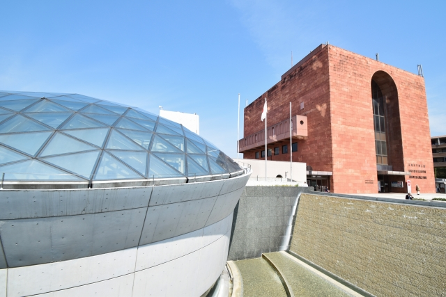

長崎市観光
時間: 9時〜17時
移動開始位置名: 松ヶ枝国際ターミナル
1つ目の場所: 長崎原爆資料館
特徴: 「長崎を最後の被爆地に」原爆の脅威と平和の尊さを伝え、恒久平和を世界に発信
1945年に原爆により被害を受けた長崎の歴史と平和への願いを伝える施設です。被爆の惨状や核兵器開発の歴史、長崎の復興の様子などをストーリー性のある展示で紹介しています。核兵器のない世界の実現に向けて平和を発信する場として、国内外から多くの人々が訪れる場所です。
滞在時間:60分
2つ目の場所: 長崎歴史文化博物館

特徴: 五感をつかって学ぼう！近世長崎の海外交流の歴史と文化
江戸時代からの海外交流の歴史を深く掘り下げ、その一端を復元した長崎奉行所で実際の裁判の寸劇を楽しむことができます。400年にわたる長崎の文化を約81,000点の貴重な資料と共に学び、国際交流の歴史を時代ごとの展示を通じて体験することができる博物館です。
滞在時間:60分
3つ目の場所: 長崎孔子廟 中国歴代博物館
特徴: 壮麗な伝統美を随所に凝らした日本で唯一の本格的中国様式の霊廟
江戸時代から続く歴史と唯一無二の中国様式が息づく長崎孔子廟で、中国の春秋時代の偉大な思想家の遺産に触れ、中国歴代博物館に展示されている貴重な宮廷文物や古代美術を堪能できます。
滞在時間:60分
4つ目の場所: グラバー園

特徴: 偉人たちも魅せられた長崎港の絶景を体感！
長崎港を一望できる南山手の丘にある、明治期の洋館群を展示する観光スポットです。世界遺産の構成資産である旧グラバー住宅をはじめ、国指定重要文化財の旧リンガー住宅や旧オルト住宅など、異国情緒あふれる建築物が見どころです。園内には花や緑が豊富で、石畳や石段にも歴史や文化の香りが漂います。
滞在時間:60分
5つ目の場所: 祈りの丘絵本美術館

特徴: 絵本の歴史とゆかりのある丘に
長崎の歴史的な丘に位置し、洋風瓦葺きの特色ある建物に囲まれ、絵本とその原画の世界を堪能できます。
美しい展示に加え、1万冊以上の厳選された絵本に囲まれながら、心地良い時間を過ごし、新しい発見と感動に満ちた経験ができます。
滞在時間:30分
6つ目の場所: 軍艦島デジタルミュージアム

特徴: 3D、VR、MRなど最新のデジタル技術であの頃の軍艦島にタイムスリップ！
長崎の軍艦島の歴史と文化を最新のデジタル技術を使って再現し、訪問者に感動的な体験を提供しています。
また、多様な展示やVR技術を通じて、かつての島の生活を独特の魅力で伝えています。
滞在時間:30分
7つ目の場所: 長崎市旧香港上海銀行長崎支店記念館
特徴: 長崎近代交流史と孫文・梅屋庄吉ミュージアム
長崎の近代交流史を学べる貴重な場所です。
明治期の建築美と歴史的背景が息づく空間で、長崎の国際的な交流の歴史を感じることができます。
滞在時間:60分
8つ目の場所: 長崎市べっ甲工芸館（旧長崎税関下り松派出所）

特徴: 全国各地の貴重なべっ甲作品が大集合！
日本べっ甲協会から寄贈された300点を超えるべっ甲細工の貴重な作品を展示しており、長い歴史と伝統を感じることができます。
また、税関に関する資料の展示もあり、長崎の文化遺産を深く知ることができる場所です。
滞在時間:20分
到着:松ヶ枝国際ターミナル